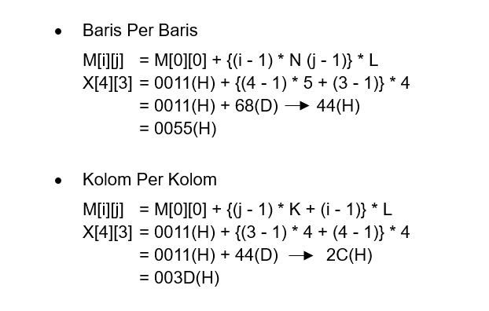

Latihan Mapping Array Dimensi 1, 2 dan 3
.jpg?1676969394592)
Setelah sobat dondon belajar tentang array dimensi 1, 2, dan 3, disini kita akan menyelesaikan suatu studi kasus tentang mapping pada array. Jika kalian belum paham tentang array, bisa kalian ulangi lagi pada materi array dimensi satu, dimensi dua, dan dimensi tiga.
Pemahaman tentang tipe data array sangat penting terutama bagi Anda yang sedang belajar bahasa pemrograman untuk menjadi seorang programmer. Dalam pemetaan mapping array hal yang paling harus dikuasai adalah tentang konversi bilangan, yang bisa kalian ikutin tutorialnya pada Mengenal Konversi Dalam Bilangan.
Latihan Mapping Array Satu Dimensi
Suatu Array A dideklarasikan sebagai berikut:
int A[50] dengan alamat awal berada di
0011(H). Tentukan berapa alamat array A[20] dan A[40]?
Diketahui :
@A[i] = 20 dan @A[i] = 40
B = 0011(H)
i = 20 dan i = 40
L = 20
Penyelesaian :
-
@[20] = 0011(H) + (20 - 1) * 2
A[20] = 0011(H) + 38(D)
A[20] = 0011(H) + 26(H)
A[20] = 0037(H) -
@A[40] = 0011(H) + (40 - 1) * 2
A[40] = 0011(H) + 78(D)
A[40] = 0011(H) + 4D(H)
A[40] = 005F(H)
Latihan Mapping Array Dua Dimensi
Suatu Array X
dideklarasikan sebagai berikut:
Float X[4][5] dengan alamat awal berada pada 0011(H).
Tentukan berapa alamat array X[4][3], berdasarkan cara pandang baris dan kolom?
Diketahui :
M[i][j] = X[4][3]
M[0][0] = 0011(H)
i = 4
j = 3
N = 5
L = 4
K = 4
Penyelesaian :

Latihan Mapping Array Tiga Dimensi
-
Suatu Array A dideklarasikan sebagai berikut:
Float A[5][5][5] dengan alamat awal A[0][0][0] = 0021(H), berapakah alamat array A[2][3][2] dan A[5][4][3]? -
Suatu Array B dideklarasikan sebagai berikut:
Char B[3][4][3] dengan alamat awal B[0][0][0] = 0021(H), berapakah alamat array B[2][3][2] dan B[3][4][3]?
Jawaban:
-
Diketahui:
Float = [5][5][5]
A[0][0][0] = 0021(H)
L = 4
Penyelesaian :
-
Diketahui:
Char = [3][4][3]
B[0][0][0] = 0021(H)
L = 1
Penyelesaian :

Lanjutan
Sekian Artikel mengenai Latihan Pemetaan Mapping pada array satu dimensi, dua dimensi, dan tiga dimensi, semoga artikel ini dapat bermanfaat bagi sobat dondon baik untuk menambah ilmu, mengerjakan tugas, maupun untuk sekedar menambah wawasan tentang Mapping pada Array. Selanjutnya kita akan belajar mengenai Stack atau Tumpukan pada Belajar Bareng 9: Fungsi dan Pengertian Stack atau Tumpukan. Akhir kata, Terimakasih atas kunjungannya.